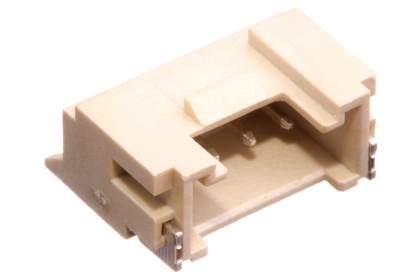
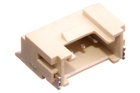
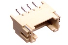

2 mm 4 Pin JST Socket Right Angle (SMD) - J204RS

Summary
Name: 2 mm 4 Pin JST Socket Right Angle (SMD)
ID: JSTS-02-X-04PI-RS
Hex ID: J204RS
WebPage: https://github.com/oomlout/oomlout-OOMP/wiki/JSTS-02-X-04PI-RS
Short URL: http://oom.lt/J204RS
Revision History: https://github.com/oomlout/oomlout-OOMP/blob/master/parts/JSTS-02-X-04PI-RS/
| Type |
Size |
Color |
Description |
Index |
JSTS
JST Socket |
02
2 mm |
X
|
04PI
4 Pin |
RS
Right Angle (SMD) |
Images


About
This part is awaiting a description.
Specifications
| Info |
Value |
| Type |
JST Socket |
| Size |
2 mm |
| Description |
4 Pin |
| Index |
Right Angle (SMD) |
Extra Details
Spotted a mistake, want to add more? Let us know oomp@oomlout.com
All images and resources are licensed [CC BY-SA] unless otherwise stated (ie. the datasheets)